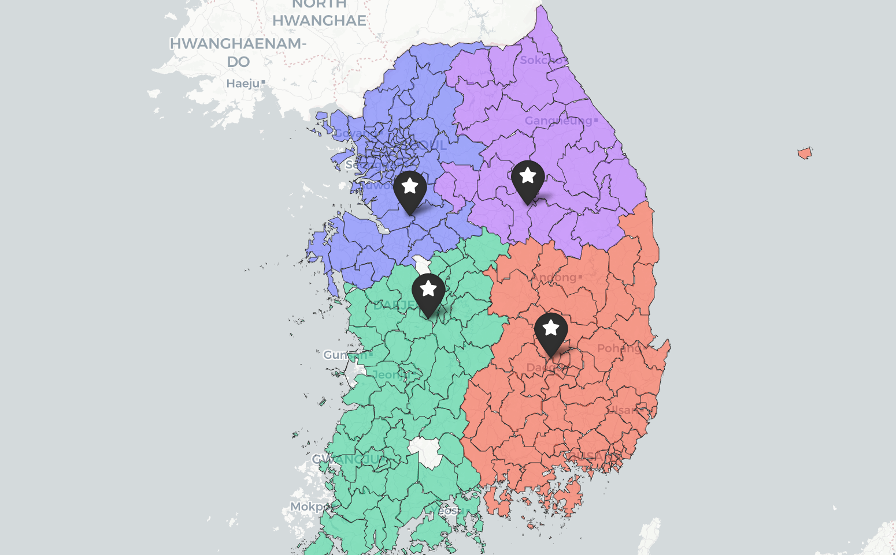
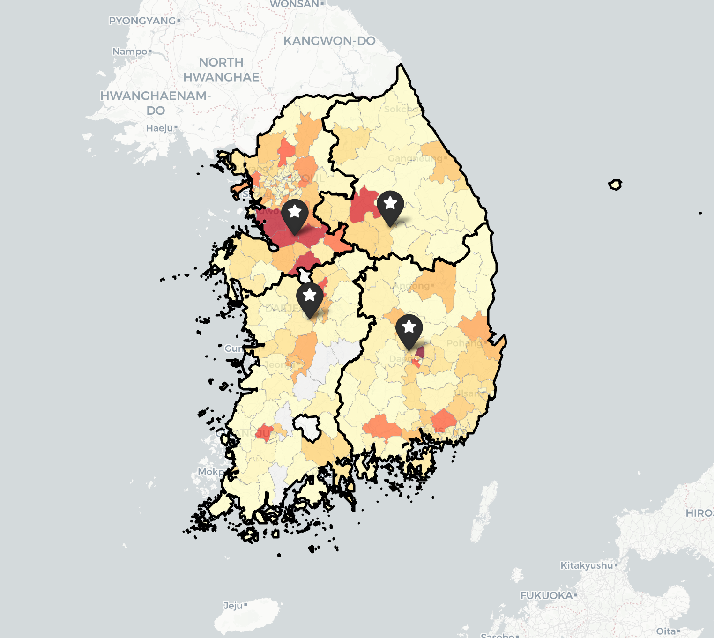
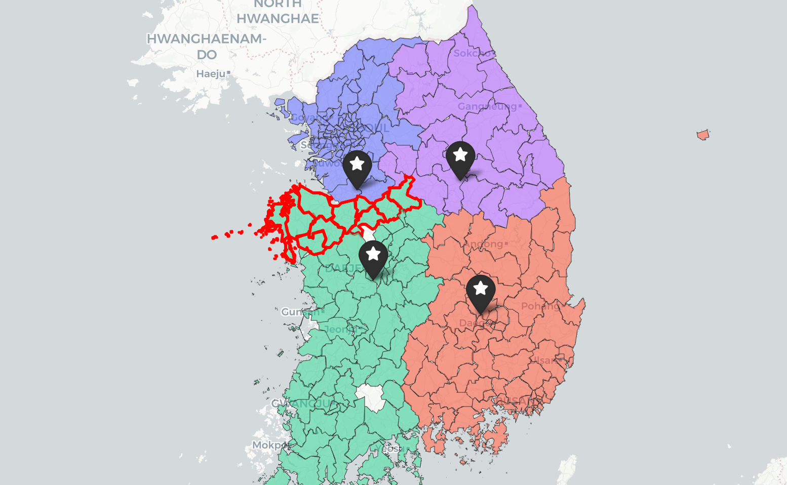
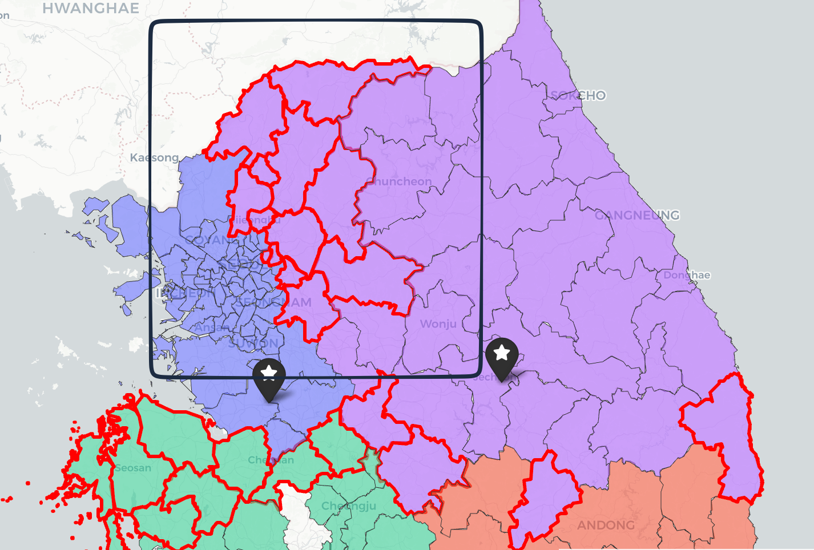
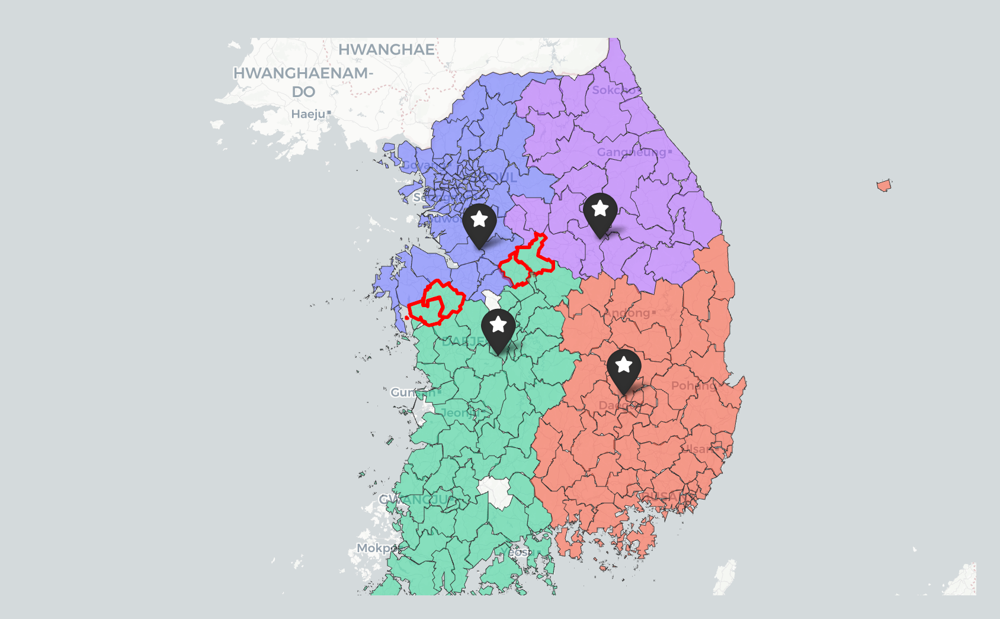
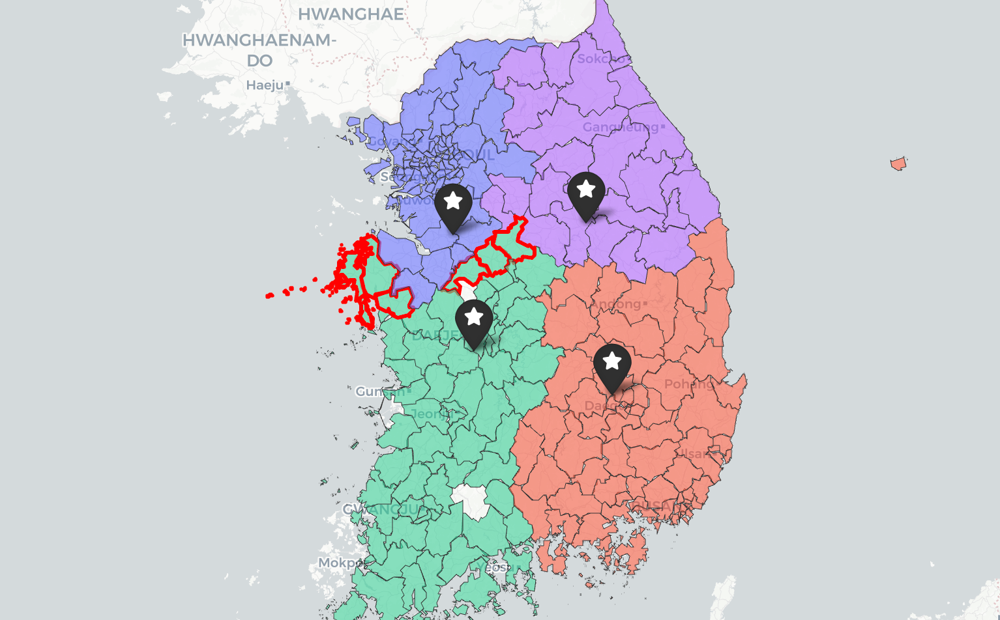
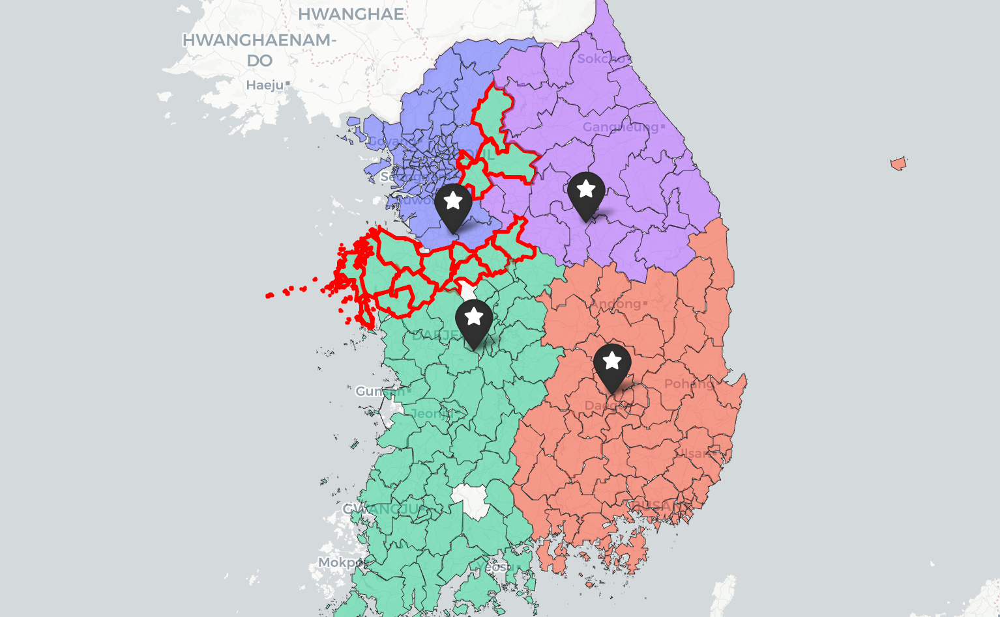

평택RDC의 운영 부담을 줄이기 위해, "평택의 일부 권역을 계룡으로 이관하면 비용·운영이 개선되는가?" 를 정량적으로 검증하는 것을 목표로 한다.
권역 5/10/15/20% 축소 시나리오를 시뮬레이션한 결과, 15%가 의미 있는 변화의 임계점으로 선정하여 권역 이전시 변화하는 내용을 검토하였다.
업체 공유용_배송 실적_2025년 2월 11월_20260317.csv업체 공유용_배송 단가표_2025년 2월 11월__20260317.csv평택RDC·제천RDC·계룡RDC·칠곡RDC가 현재 담당하고 있는 주요 권역을 시군구 단위로 나타낸 지도이다.

총 1,288 배송지 / 89 시군구 / 6 광역도시
| 광역도시 | 시군구 | 시군구 수 |
|---|---|---|
| 강원도 | 강릉시, 원주시, 철원군 | 3 |
| 경기도 | 가평군, 고양시 덕양구, 고양시 일산동구, 고양시 일산서구, 과천시, 광명시, 광주시, 구리시, 군포시, 김포시, 남양주시, 동두천시, 부천시 소사구, 부천시 오정구, 부천시 원미구, 성남시 분당구, 성남시 수정구, 성남시 중원구, 수원시 권선구, 수원시 영통구, 수원시 장안구, 수원시 팔달구, 시흥시, 안산시 단원구, 안산시 상록구, 안성시, 안양시 동안구, 안양시 만안구, 양주시, 양평군, 연천군, 오산시, 용인시 기흥구, 용인시 수지구, 용인시 처인구, 의왕시, 의정부시, 파주시, 평택시, 포천시, 하남시, 화성시 | 42 |
| 서울특별시 | 강남구, 강동구, 강북구, 강서구, 관악구, 광진구, 구로구, 금천구, 노원구, 도봉구, 동대문구, 동작구, 마포구, 서대문구, 서초구, 성동구, 성북구, 송파구, 양천구, 영등포구, 용산구, 은평구, 종로구, 중구, 중랑구 | 25 |
| 인천광역시 | 강화군, 계양구, 남동구, 동구, 미추홀구, 부평구, 서구, 연수구, 중구 | 9 |
| 충청남도 | 당진시, 서산시, 아산시, 예산군, 천안시 동남구, 천안시 서북구, 태안군, 홍성군 | 8 |
| 충청북도 | 음성군, 진천군 | 2 |
RDC별 배송지(Ship-to party) 수와 시군구 수 비교. (중부RDC·제주RDC 제외 / Streamlit 1-2 표 기준 — 시군구는 주담당 RDC 정의)
| RDC | 배송지 수 | 시군구 수 |
|---|---|---|
| 평택RDC | 1,288 | 87 |
| 칠곡RDC | 982 | 73 |
| 계룡RDC | 698 | 63 |
| 제천RDC | 281 | 24 |
권역별 수요 분포를 분석한 결과, 평택RDC 권역에서 가장 높은 수요 밀집 현상이 확인되었다. 특히 수도권 및 경기 남부 인접 시군구를 중심으로 고수요 지역이 광범위하게 형성되어 있으며, 타 RDC 대비 상대적으로 높은 물동량 집중도가 나타난다.

배송지의 물량을 3.5T 기준 정량적으로 산정한 내용입니다.
권역 재배정을 위해서는 각 배송지의 물량을 정량적으로 산정할 필요가 있다. "이 지역에 하루에 타이어가 얼마나 필요한가"를 트럭 단위로 환산해 사용하고자 했으나, 타이어의 정확한 부피(CBM) 데이터가 없다.
원본 배송 실적의 Measurement by Material and Q'ty 컬럼은
해당 배송에서 타이어가 트럭 적재 공간의 몇 %를 차지했는지를 나타낸다.
이 값을 수량으로 나누면 타이어 1본당 적재율(%)을 산출할 수 있다.
1본당 적재율(%) = Measurement ÷ 수량
동일 사이즈 × 동일 트럭 조합에서 이 값이 거의 일정(변동계수 2.3%) 함을 확인 →
288개 타이어 사이즈 × 5개 트럭 톤급별 적재율 기준표를 구축.
이를 활용해 시군구별 일평균 수요를 "3.5T 트럭 몇 대분"으로 환산한 값이 daily_demand_3_5t이다.
| 트럭 | 사용 비중 | 비고 |
|---|---|---|
| 3.5T | 54.2% | 모든 RDC 공통 주력, 기준표 288개 사이즈 완비 |
| 5T | 31.7% | 2순위, 참고용으로 병행 산출 |
| 1T | 12.5% | 소량 배송용 |
| 8T / 11T | 1.6% | 대형 타이어 전용, 일부 사이즈만 적재 가능 |
3.5T는 가장 높은 사용 비중(54.2%)이며 모든 RDC에서 공통으로 운용된다. 288개 사이즈 전부에 적재율이 확보되어 있어 비교 기준으로 가장 일관적이다.
2025년 11월 실제 배송 비용과 3.5T 단일 기준 추정 비용을 비교한 결과:
| 기준 | 일평균 비용 | 비고 |
|---|---|---|
| 실제 (전체 톤수) | 3,969만원 | 3PL 제외 (단가표에 해당 운임비 없음) |
| 3.5T 추정 | 4,590만원 | 배송지간 거리 보정 |
| 차이 | +16% | 3PL 비용(전체의 32%) 포함 시 차이는 더 작아짐 |
시나리오 간 상대 비교에는 동일 기준을 적용하므로 절대 오차는 상쇄되어 비교 결과의 유효성에는 영향이 없다.
| RDC | 시군구 수 | 총수요 | 일평균 | 비중 (%) |
|---|---|---|---|---|
| 평택RDC | 87 | 4,125.5 | 84.6 | 45.3 |
| 칠곡RDC | 73 | 2,565.0 | 53.0 | 28.4 |
| 계룡RDC | 63 | 1,705.5 | 35.2 | 18.8 |
| 제천RDC | 24 | 663.2 | 14.0 | 7.5 |
| 합계 | 247 | 9,059.2 | 186.8 | 100.0 |
자연권역과 현재 운영(AS-IS)을 비교하여 현재 RDC 권역 구조의 공간적 형상을 파악한다.
평택RDC의 수요 물량을 5% / 10% / 15% / 20% 단계적으로 축소하고, 축소된 물량을 계룡RDC로 이전하는 시나리오를 분석한다. 이전 대상이 아닌 칠곡RDC·제천RDC는 현재 시군구 배정을 그대로 유지(동결)하여 평택→계룡 단방향 이동 효과만 확인한다.
단순히 가까운 지역이 아니라, 물량을 고려하여 계룡RDC로 이관하였을 때 운영 부담이 적은 시군구부터 순차적으로 이관한 시뮬레이션이다.
시군구 물량과 RDC 간 이동거리/시간을 함께 반영한 전체 운영 부담 변화율의 변화

축소율 5/10/15/20% 시나리오에서 수요 가중 이동시간·거리(시군구별 수요 × RDC↔시군구 거리/시간) 합의 현재 운영 대비 증감률.
시군구별 물량과 RDC 간 이동거리·이동시간을 함께 반영한 전체 이동 부담의 변화율이다. 실제 차량 단위 운행시간과 운행거리는 4장에서 별도로 산출
| 시나리오 | 이동시간 증가율 | 이동거리 증가율 |
|---|---|---|
| 현 상태 | +0.0% | +0.0% |
| 5% 축소 | +0.83% | +0.9% |
| 10% 축소 | +2.27% | +2.35% |
| 15% 축소 | +3.7% | +3.94% |
| 20% 축소 | +5.92% | +6.73% |
평택의 capacity가 축소되면 일부 시군구가 계룡으로 강제 재배정된다. 그 시군구가 원래 평택에 배정되어 있던 이유는 평택이 더 가까웠기 때문이며, 계룡으로 옮기면 해당 시군구의 이동시간·거리가 늘어난다. 평택이 잃는 절약분보다 계룡이 떠안는 추가 거리·시간이 더 크기 때문에, 네트워크 전체 합산값은 증가한다.
평택RDC 물량 축소 비율에 따른 이동거리 및 이동시간 변화를 비교한 결과, 10% 축소 구간까지는 증가폭이 상대적으로 제한적인 수준으로 유지되었다.
반면 15% 축소 구간부터 이동거리(+3.97%) 및 이동시간(+3.94%) 증가율이 동시에 확대되기 시작하였으며, 20% 축소 시에는 각각 약 +6% 수준까지 증가하는 것으로 나타났다.

평택RDC 물량 축소 비율을 20% 이상으로 확대할 경우, 추가 이관 대상 시군구는 경기 동·북부 권역까지 확장되는 것으로 확인되었다.
주요 대상 지역 · 일평균 3.5T 필요 대수
| (경기) 광주 | 1.4대 |
| 포천 | 1.7대 |
| 양평 | 0.3대 |
| 연천 | 0.2대 |
| 가평 | 0.1대 |
| 철원 | 0.1대 |
해당 지역들은 지리적으로 평택보다 북동측에 위치한 권역으로, 제천RDC로 이관하는 것이 효율적이나 현재 시나리오에서는 계룡RDC로만 물량을 이전하도록 제한하였다.
이 물량을 계룡RDC로 이전할 경우, 기존 권역의 공간적 연속성이 단절된다. 특히 경기 북부 및 강원 접경 지역 물량이 남측 권역으로 편입되면서 배송 동선이 비자연적으로 길어지고, 권역 구조 또한 비연결 형태로 변화한다.
그 결과 이동거리·이동시간 증가가 급격히 확대되며 운영 효율 측면에서도 비효율적인 구조가 발생한다. 따라서 평택RDC 축소율을 20% 이상으로 확대하는 시나리오는 단순 workload 분산 효과 대비 물류 네트워크 효율 저하 영향이 크며, 운영 관점에서 15%가 현실적인 적용 한계 구간으로 해석할 수 있다.



15% 축소안에서 평택RDC → 계룡RDC로 재배정된 대상 10개 시군구(충청남도 8 / 충청북도 2) · 174개 배송지(Ship-to) · 일평균 12.6대 (3.5T 환산)
시군구별 일평균 수요(수요 큰 순):
| 시군구 | 수요 (일평균) |
|---|---|
| 충청남도 천안시 동남구 | 3.6 |
| 충청북도 음성군 | 2.5 |
| 충청남도 아산시 | 1.6 |
| 충청남도 천안시 서북구 | 1.4 |
| 충청남도 당진시 | 1.0 |
| 충청남도 서산시 | 0.9 |
| 충청남도 홍성군 | 0.7 |
| 충청북도 진천군 | 0.6 |
| 충청남도 태안군 | 0.2 |
| 충청남도 예산군 | 0.1 |
| 합계 | 12.6 |
수요 : 3.5T 기준으로 일평균 필요 차량 대수
위 10개 시군구(충청남도 8 + 충청북도 2)를 평택 → 계룡으로 이전했을 때 평택RDC가 처리하는 전체 물량 기준 실제 운행 변화량(개별 운행이 아닌 합계 평가).
| 지표 | 현재 운영 (충청 포함) | 15% 축소안 (충청 제외) | 변화 | 변화율 |
|---|---|---|---|---|
| 운행 횟수 (shipment) | 4,261 | 3,960 | −301 | −7.1% |
| 운행 시간 (h) | 6,912.8 | 6,122.0 | −790.8 | −11.4% |
| 운행 거리 (km) | 412,988 | 369,768 | −43,220 | −10.5% |
| 리드타임 (lead = 운행 + 정차, h) | 15,939.1 | 13,985.7 | −1,953.4 | −12.3% |
| 분류 | shipment | AS-IS 거리 | 15% 축소안 거리 | 효과 |
|---|---|---|---|---|
| 충청권 단일 지역구 shipment (단일 73 + 전체 228) | 301 | 25,531 km | — (삭제) | shipment 자체가 사라짐 |
| 혼합형 shipment (충청 + 평택·안성) | 211 | 27,979 km | 10,291 km | 운행 단축 (−17,689 km) |
| 합계 | 4,261 | 412,988 | 369,769 | −43,220 km |
혼합형 shipment(충청 + 평택·안성)에서 충청권 배송지만 제거되었을 때 남은 shipment의 1건당 운행 거리 변화.
| 혼합형 shipment 1건당 | AS-IS | 15% 축소안 | 변화 |
|---|---|---|---|
| distance / shipment | 132.6 km | 48.8 km | −83.8 km/shipment |
15% 축소안에서 평택RDC가 처리하는 전체 물량의 운임 변화량. 2025년 11월 평택 단가표(20 거리구간 × 5 톤급)를 모든 운행에 통일 적용하여 산출.
| 지표 | 현재 운영 | 15% 축소안 | 변화 | 변화율 |
|---|---|---|---|---|
| 운행 횟수 (shipment) | 4,261 | 3,960 | −301 | −7.06% |
| 운행 거리 (km) | 412,988 | 369,769 | −43,220 | −10.47% |
| 운임 (원) | 650,118,500 | 589,488,200 | −60,630,300 | −9.33% |
| 톤급 | 현재 운영 ship | 15% 축소안 ship | 현재 운임 | 축소안 운임 | 변화 | 변화율 | 절감 비중 |
|---|---|---|---|---|---|---|---|
| 1T | 1,437 | 1,347 | 154,993,100 | 145,816,900 | −9,176,200 | −5.92% | 15% |
| 3.5T | 1,932 | 1,804 | 277,954,000 | 253,836,900 | −24,117,100 | −8.68% | 40% |
| 5T | 883 | 800 | 214,929,900 | 187,592,900 | −27,337,000 | −12.72% | 45% |
| 8T | 6 | 6 | 1,376,000 | 1,376,000 | 0 | 0.00% | — |
| 11T | 3 | 3 | 865,500 | 865,500 | 0 | 0.00% | — |
| 합계 | 4,261 | 3,960 | 650,118,500 | 589,488,200 | −60,630,300 | −9.33% | 100% |
| 월 | 현재 운영 ship | 15% 축소안 ship | 현재 운임 | 축소안 운임 | 변화 | 변화율 |
|---|---|---|---|---|---|---|
| 2월 | 1,868 | 1,749 | 298,577,300 | 271,058,500 | −27,518,800 | −9.22% |
| 11월 | 2,393 | 2,211 | 351,541,200 | 318,429,700 | −33,111,500 | −9.42% |
15% 축소안에서 평택RDC로부터 이관된 충청권 배송지(4.1 시군구 이동 상세 참조)를
계룡RDC가 어떻게 흡수했는지에 대한 분석.
기존 계룡 운행에 추가하거나, 톤급을 상향하거나, 신규 ship으로 처리하는 등 세 가지 경로로 분배되었다.
| 처리 경로 | 건수 | 비율 |
|---|---|---|
| 기존 shipment에 병합 (트럭 톤급 유지) | 2,484 | 77.26% |
| 트럭 톤급 상향 | 515 | 16.02% |
| 신규 shipment 생성 | 216 | 6.72% |
| 합계 | 3,215 | 100.00% |
기존 계룡 ship에 흡수된 2,999건의 내부 구성. Case 1 : 톤급을 그대로 두고 적재율 90% 안에서 흡수, Case 2 : 톤급을 한 단계 상향한 뒤 cap 85% 안에서 흡수한다.
| Case | 정책 | 건수 | 비중 |
|---|---|---|---|
| Case 1 | 톤급 그대로, cap 90% | 2,484 | 82.83% |
| Case 2 | 톤급 1단계 상향, cap 85% | 515 | 17.17% |
상향 정책: 1T→3.5T 또는 3.5T→5T
| 원래 톤급 | → 최종 톤급 | 건수 | 비중 |
|---|---|---|---|
| 1T | 3.5T | 223 | 43.30% |
| 3.5T | 5T | 292 | 56.70% |
| 합계 | — | 515 | 100% |
기존 ship에 흡수하지 못한 216 ship-to pair는 175개의 신규 ship으로 묶여 처리되었다.
| 톤급 | 건수 | 비중 |
|---|---|---|
| 1T | 3 | 1.7% |
| 3.5T | 101 | 57.7% |
| 5T | 29 | 16.6% |
| 8T | 42 | 24.0% |
신규 ship의 90%가 단독 운행(1 ship-to 1 trip). 큰 화물 + 위치 분산으로 묶기 어려운 케이스. 8T shipment 42건 중 물량이 많은 단일 배송 38건(90.5%) / 묶음 배송 4건(9.5%)
평택 충청권 흡수 전후 계룡RDC가 처리하는 전체 물량의 운임 변화량. 2025년 11월 계룡 단가표를 통일 적용하여 산출.
| 지표 | 현재 운영 (asis) | 15% 흡수 후 | 변화 | 변화율 |
|---|---|---|---|---|
| 운행 횟수 (shipment) | 2,206 | 2,381 | +175 | +7.93% |
| 운행 거리 (km) | 292,479 | 415,033 | +122,554 | +41.90% |
| 운임 (원) | 393,089,200 | 557,022,800 | +163,933,600 | +41.70% |
| 톤급 | 현재 운영 | 흡수 후 | 변화 | 현재 운임 | 흡수 후 운임 | 변화 | 변화율 |
|---|---|---|---|---|---|---|---|
| 1T | 738 | 518 | −220 | 93,871,100 | 75,921,400 | −17,949,700 | −19.12% |
| 3.5T | 1,074 | 1,106 | +32 | 164,442,300 | 221,895,900 | +57,453,600 | +34.94% |
| 5T | 351 | 672 | +321 | 125,577,100 | 238,775,400 | +113,198,300 | +90.14% |
| 8T | 34 | 76 | +42 | 6,683,900 | 17,915,300 | +11,231,400 | +168.04% |
| 11T | 9 | 9 | 0 | 2,514,800 | 2,514,800 | 0 | 0.00% |
| 합계 | 2,206 | 2,381 | +175 | 393,089,200 | 557,022,800 | +163,933,600 | +41.70% |
| 월 | 현재 운영 ship | 흡수 후 ship | 현재 운임 | 흡수 후 운임 | 변화 | 변화율 |
|---|---|---|---|---|---|---|
| 2월 | 826 | 915 | 161,097,100 | 239,183,800 | +78,086,700 | +48.47% |
| 11월 | 1,380 | 1,466 | 231,992,100 | 317,839,000 | +85,846,900 | +37.00% |
평택 절감과 계룡 증가를 더해 본 권역 조절 시나리오가 시스템 전체 비용에 미치는 영향.
| RDC | 현재 운영 | 15% 축소·흡수 후 | 변화 | 변화율 |
|---|---|---|---|---|
| 평택RDC | 650,118,500 | 589,488,200 | −60,630,300 | −9.33% |
| 계룡RDC | 393,089,200 | 557,022,800 | +163,933,600 | +41.70% |
| 시스템 합계 | 1,043,207,700 | 1,146,511,000 | +103,303,300 | +9.90% |
평택 RDC의 충청남도·충청북도 권역 출하 물량 중, 15% 축소안 기준 계룡 RDC로 이관되는 물량을 대상으로 수송 운임 변화를 시뮬레이션 하였다. 해당 물량을 평택 RDC가 아닌 계룡 RDC가 공장에서 직접 수송할 경우, 수송 운임이 어떻게 변화하는지 예측한다.
| 항목 | 값 |
|---|---|
| 총 수량 (이관 대상 본수) | 85,078 본 |
| Material (고유 SKU) | 1,110 |
동일한 cc 물량에 대해 가정이 다른 두 가지 독립된 방법 으로 수송 운임을 산출하고, 두 결과가 수렴하는 구간을 신뢰 구간으로 본다.
| 구분 | 시나리오 1 — 정밀 계산 | 시나리오 2 — 날짜순 채움 |
|---|---|---|
| 요약 | 이전 대상 물량을 실제 shipment 와 무관하게 재구성하여, Material 별로 가장 효율적인 톤급의 차량을 선택하는 방식 | 평택 도착 실적 ship 을 날짜순으로 누적해 이전 대상 물량을 채울 때까지 shipment를 선택했을 때의 운임 (현실 운영 반영 목적) |
| 가정 | Material 별로 가장 싼 톤급 선택. 공장 출하 schedule 무시. | 출하 schedule. shipment 단위 누적 |
| 지표 | 시나리오 1 (정밀) | 시나리오 2 (날짜순) |
|---|---|---|
| 선정 shipment | — (수량만) | 116 |
| cover 본수 | 52,711 | 55,550 (+594 초과) |
| 평택 운임 | ₩ 25,463,059 | ₩ 32,569,020 |
| 계룡 운임 | ₩ 20,642,263 | ₩ 25,848,150 |
| 절감액 | −₩ 4,820,796 | −₩ 6,720,870 |
| 절감률 | −18.93% | −20.64% |
| 본당 평균 운임 (평택) | ₩ 483 / 본 | ₩ 587 / 본 |
평택은 단가 최저인 18C 한 종류로만 묶이고, 계룡은 (출발지, 톤급) 단가가 분기되어 18C / 8T 가 혼합 선택됨.
| 톤급 | 평택 트럭 (대) | 평택 cc 본수 | 평택 운임 | 계룡 트럭 (대) | 계룡 cc 본수 | 계룡 운임 |
|---|---|---|---|---|---|---|
| 18C | 100 | 52,711 | 25,463,060 | 59 | 31,123 | 11,724,311 |
| 8T | — | — | — | 55 | 21,588 | 8,917,953 |
| 합계 | 100 | 52,711 | 25,463,060 | 114 | 52,711 | 20,642,263 |
| 톤급 | ship 수 | cc 본수 | 평택 운임 | 계룡 단가 합 |
|---|---|---|---|---|
| 8T | 45 | 16,262 | 11,241,380 | 7,454,910 |
| 18C | 32 | 14,024 | 8,469,870 | 6,368,000 |
| 45FT | 21 | 17,449 | 9,912,000 | 매칭 X |
| 40FT | 9 | 4,310 | NaN | NaN |
| 11C | 5 | 2,460 | 1,874,000 | 1,212,000 |
| 5T | 2 | 605 | 457,770 | 287,240 |
| 25C | 2 | 440 | 614,000 | 매칭 X |
| 합계 | 116 | 55,550 | 32,569,020 | 25,848,150 |
두 방법은 평택 운임에서 다소 차이를 보이지만, 절감률은 −19 ~ −21 % 범위로 수렴한다.
| 구간 | 평택 운임 | 계룡 운임 | 절감액 | 절감률 |
|---|---|---|---|---|
| 시나리오 1 | 25,463,059 | 20,642,263 | −4,820,796 | −18.93% |
| 시나리오 2 | 32,569,020 | 25,848,150 | −6,720,870 | −20.64% |
| 중심값 (평균) | ≈ 29,016,040 | ≈ 23,245,207 | ≈ −5,770,833 | ≈ −20% |
평택RDC 물량 축소 시뮬레이션 결과, 10% 수준까지는 이동거리·이동시간 증가율이 비교적 완만하게 증가하였으나, 15% 이후부터는 증가폭이 점차 확대되는 경향이 확인되었다. 이는 평택RDC가 단순 과밀 상태가 아니라 수도권 남부 및 충청 북부를 연결하는 자연권역 기반의 운영 구조를 형성하고 있음을 의미한다.
특히 안성–평택–음성/진천(충북), 평택–당진/서산(충남 서부), 평택–천안/아산(충남 북부)의 3개 권역을 중심으로 혼합 shipment 패턴(총 211건)이 존재하며, 충청권 물량은 이미 수도권 남부 배송과 함께 묶여 운영되고 있었다. 따라서 충청권 이관 시 단순 권역 이동 이상의 배송 경로 재구성이 발생하며, 일정 수준 이상 축소 시 추가 이동 부담이 빠르게 증가하는 구조가 확인되었다.
다만 15% 수준까지는 전체 이동 부담 증가율이 상대적으로 안정적으로 유지되었으며, 권역 연속성 또한 크게 훼손되지 않았다. 반면 20% 이상 축소 구간에서는 경기 동·북부 및 강원 접경 권역까지 이관 대상에 포함되기 시작하면서 권역 연결성과 운영 효율이 함께 저하되는 경향이 나타났다.